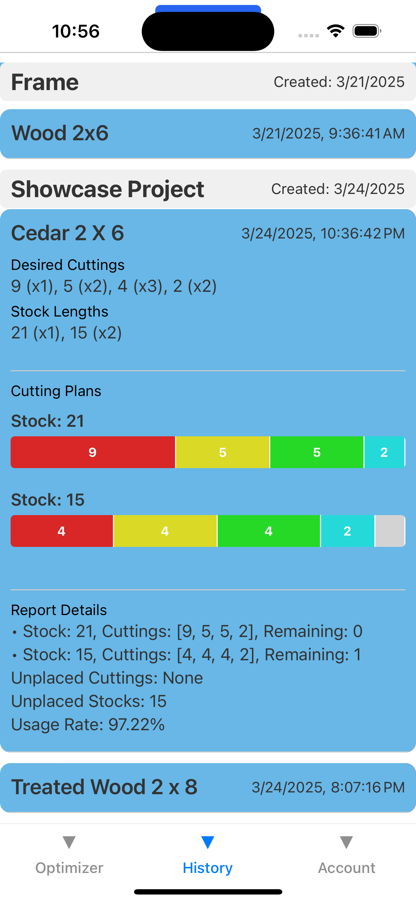
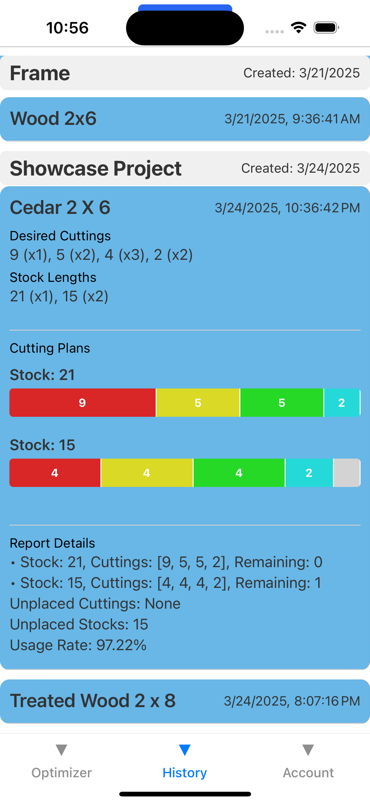

My Projects
📱 Cutting Optimizer (Mobile App)
A mobile app, inspired by my tradesman work, optimizes material usage for linear cutting, a problem that no app in app store currently addresses.
Dummy account - username: freeheart110@gmail.com;
password: 344945
Expo Link →
 →

→

🚗 ClaimPilot (Web App)
A full-stack insurance claim management system featuring role-based workflows for policyholders, Admins and Adjusters. Built with Spring Boot (Java), PostgreSQL, React + Next.js, and deployed with HTTPS on AWS EC2, RDS and Vercel.
Dummy account (Admin) - username: admin@claimpilot.com;
password: admin123
Frontend GitHub →
Backend GitHub →

🌠eLearning Platform (Web App)
A full-stack web-based e-learning platform that enables students and teachers to communicate, collaborate, receive notifications and manage courses in real time. Built with Django, Django Channels, React, WebSockets, Celery and Redis.
Dummy account - username: student2;
password: abcd4321
API Schema →